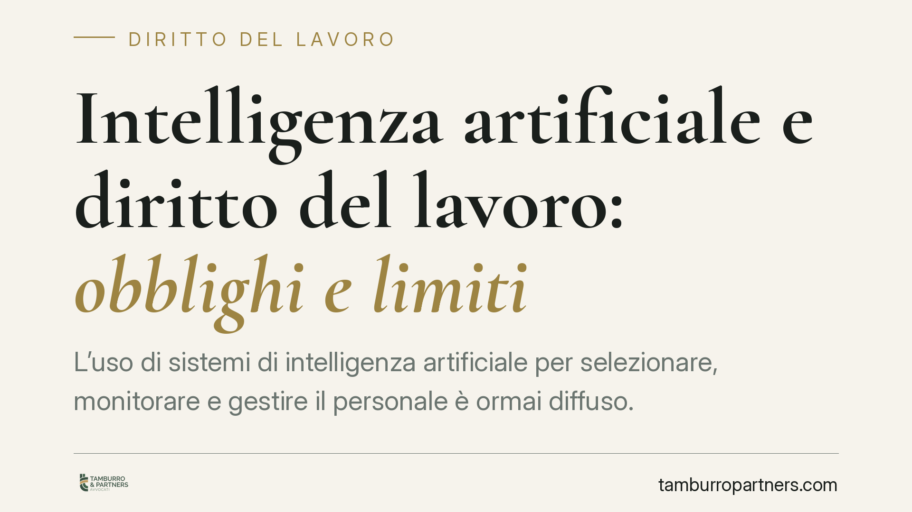

Intelligenza artificiale e diritto del lavoro: obblighi e limiti
L'uso di sistemi di intelligenza artificiale per selezionare, monitorare e gestire il personale è ormai diffuso. Il quadro normativo esiste già: Decreto Trasparenza, GDPR e AI Act impongono obblighi informativi, limiti alle decisioni automatizzate e una valutazione dei rischi aggiornata. Capire cosa è davvero vincolante è il primo passo per usare questi strumenti senza esporsi a contenziosi e sanzioni.

Il quadro normativo vigente
Non esiste in Italia un unico testo che disciplini l'intelligenza artificiale nei rapporti di lavoro. Il tema va letto attraverso tre fonti già in vigore, che si integrano tra loro.
La prima è l'art. 1-bis del D.Lgs. 152/1997, introdotto dal D.Lgs. 104/2022 (Decreto Trasparenza). La norma impone al datore di lavoro di informare il lavoratore quando utilizza "sistemi decisionali o di monitoraggio automatizzati" deputati a fornire indicazioni rilevanti ai fini dell'assunzione, della gestione del rapporto, dell'assegnazione di compiti, della sorveglianza, della valutazione delle prestazioni e della cessazione del rapporto. L'informativa deve essere dettagliata: logica di funzionamento, parametri, misure di controllo e categorie di dati trattati.
La seconda è l'art. 22 del Regolamento UE 2016/679 (GDPR), che riconosce all'interessato il diritto di non essere sottoposto a una decisione basata "unicamente" su un trattamento automatizzato che produca effetti giuridici o incida in modo analogo sulla sua persona.
La terza, più recente, è il Regolamento UE 2024/1689 (AI Act). Il suo Allegato III classifica come "ad alto rischio" i sistemi di IA impiegati per il reclutamento, la selezione, le decisioni su promozione e cessazione, l'assegnazione di mansioni e il monitoraggio delle prestazioni. Per questi sistemi sono previsti obblighi stringenti di gestione del rischio, documentazione, sorveglianza umana e trasparenza, con applicazione progressiva nei prossimi anni.
La "riserva di umanità": cosa significa davvero
L'espressione indica il principio per cui alcune decisioni che incidono sulla persona del lavoratore non possono essere interamente delegate a un algoritmo. Non è uno slogan: ha una base precisa nell'art. 22 GDPR.
Il nodo interpretativo è la differenza tra due situazioni.
La prima è la decisione unicamente automatizzata: il sistema produce l'esito e nessun essere umano interviene nel merito. È questa l'ipotesi che l'art. 22 GDPR vieta in via di principio, salvo eccezioni (consenso esplicito, necessità contrattuale, previsione normativa) e comunque con garanzie minime, tra cui il diritto a ottenere l'intervento umano, a esprimere la propria opinione e a contestare la decisione.
La seconda è la decisione assistita: l'algoritmo fornisce un'indicazione, ma la scelta finale resta a una persona. Qui la domanda decisiva è se l'intervento umano sia effettivo o meramente formale. Un responsabile che si limita a ratificare l'output del sistema senza poterlo valutare, modificare o ribaltare non realizza un vero presidio umano: la decisione resta, nella sostanza, automatizzata. La riserva di umanità impone quindi non la presenza nominale di un revisore, ma la sua capacità reale di incidere sull'esito.
IA e valutazione dei rischi
Un profilo spesso trascurato riguarda la sicurezza sul lavoro. L'introduzione di sistemi di IA per ritmi, turnazioni, sorveglianza e assegnazione dei compiti incide sull'organizzazione e può generare o aggravare rischi psicosociali: stress correlato al monitoraggio continuo, pressione sui tempi, percezione di opacità e perdita di controllo.
Si tratta di fattori che il Documento di Valutazione dei Rischi (DVR), previsto dal D.Lgs. 81/2008, deve considerare. L'adozione di un sistema algoritmico che modifica le modalità di svolgimento della prestazione è, a tutti gli effetti, una modifica organizzativa rilevante ai fini della valutazione.
Implicazioni pratiche
Per il datore di lavoro il messaggio è chiaro: usare l'IA non è vietato, ma è un'attività regolata su più livelli. Gli obblighi informativi del Decreto Trasparenza sono già esigibili; i limiti del GDPR alle decisioni automatizzate sono già operativi; gli adempimenti dell'AI Act entreranno in applicazione progressivamente. Ignorarli espone a sanzioni, contenziosi individuali e contestazioni sindacali.
Per il lavoratore, significa disporre di strumenti concreti: diritto a essere informato sulla logica del sistema, diritto all'intervento umano, diritto di contestare l'esito.
Cosa fare in concreto
- Mappate i sistemi di IA e automazione in uso nei processi del personale (selezione, valutazione, turni, monitoraggio) e classificateli rispetto all'Allegato III dell'AI Act.
- Verificate il presidio umano: assicuratevi che chi decide possa realmente valutare, modificare o ribaltare l'output, evitando ratifiche meramente formali.
- Aggiornate l'informativa ai lavoratori ai sensi dell'art. 1-bis D.Lgs. 152/1997, indicando logica, parametri e misure di controllo.
- Rivedete il DVR includendo i rischi psicosociali connessi al monitoraggio e ai ritmi gestiti da algoritmi.
- Predisponete una procedura di riesame che garantisca intervento umano, diritto di opinione e contestazione, in linea con l'art. 22 GDPR.
---
Contributo informativo a cura di Tamburro & Partners - Avv. Giuseppe Tamburro. Non costituisce parere legale.
Ogni storia di lavoro ha i suoi tempi.
Se gestisci HR e vuoi un confronto su contenzioso, ispezioni o licenziamenti, scrivi allo studio. Ti rispondiamo entro un giorno lavorativo.